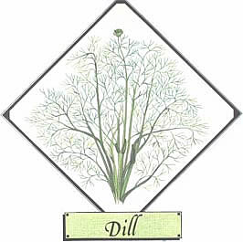
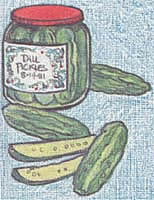
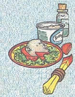

Lately, more and more people have begun to understand just how limited - variety and nutritional value - our "modern" diets have become. This realization has sparked a new and widespread interest in the culinary and therapeutic uses of herbs . . . those plants which - although not well-known today - were, just one short generation ago honored guests' on the dinner tables and in the medicine chests of our grandparents homes. In this regular feature, MOTHER will examine the availability cultivation and benefits of our "forgotten" vegetable foods and remedies and - we hope - help prevent the loss of still another bit of ancestral lore.
Most of the herbs we now enjoy have been known - and valued - since antiquity . . . and tall, feathery dill ( Anethum graueolens ) is no exception. Records of its use as a digestive aid have been found in the tombs of ancient Egypt . . . called "aneth", it was said to strengthen gladiators in the days of the Roman Empire . . . with that name mistranslated as "anise", the herb was declared an insufficient tithe in the gospel of St. Matthew . . . and during the Middle Ages it was known as a powerful charm against witchcraft! Its uses - and possibly misuses - have varied through the centuries, and today we're most familiar with the herb as a simple food flavoring.
Although both dillweed (that is, the leaves) and dillseed are employed in culinary and therapeutic preparations, the latter is most commonly used in medicine . . . and many household remedies are effected with dill water. To make this herbal medication, bruise about an ounce of the seed and soak it in a pint of cold water for six hours. Then sweeten the resulting infusion, to taste, with honey, and give one tablespoon to an adult (or one teaspoon to a child) to relieve indigestion. And since the word dill derives from a Norse term meaning "to lull", it should come as no surprise that dill water, rubbed on a mother's breast, is believed to help a nursing infant fall asleep after feeding.
Nowadays, of course, the herb is valued primarily for its virtues in the kitchen. For instance, dillweed is a delightful flavor enhancer when used with poached or baked fish, seafood salad, and shrimp . . . while a pinch in cottage cheese or potato salad will lift those foods out of the ordinary and into the category of gourmet treats. In soups and sauces, dips and pickles, breads and vegetables, a touch of dill adds special piquancy. Therefore, the cook who enjoys using herbs will find a jar of dillweed and another of dillseed all but essential in the kitchen.
An annual, dill is easily grown from seed (which can be obtained from almost any outlet that sells herb seeds). It likes full sun, plenty of water, and well-drained garden soil. The plant's main stalk is smooth, shiny, and hollow. Its many branchlets bear lacy foliage and - in midsummer - flat umbels of tiny yellow flowers that later give way to quantities of flat seed.
The kernels should be harvested in early morning or late afternoon of a dry day . . . just as the lower ones are beginning to ripen. Simply insert the entire umbel into a paper bag and clip it off . . . the upper seeds will mature on the flower head as it dries.
The fresh foliage will be most flavorful if it's picked for kitchen use before the plants bloom or immediately after seeds have formed. Dill leaves can be frozen or dried. To dehydrate the foliage, it's best to simply place it on a screen in a shady, well-ventilated area for a day or two. A low-temperature oven can be used to complete the procedure, if necessary (remember, though, that dillweed loses its color and flavor if the drying process is too prolonged), and the leaves should then be stored in tightly sealed jars.
As a companion plant, dill is said to provide some protection for cabbage, cucumbers, lettuce, onions, and young - not mature - carrots (dig it out or cut it before it blossoms, as many gardeners claim that the plant in bloom has an inhibiting effect on carrots' growth). Finally, take care not to plant dill anywhere near its relative fennel, or the plants will cross-pollinate . . . with disappointing results!
|
 Dill pickels are tasty favorites. |
 A pinch of dill adds tang to cottage cheese |
 |